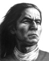

İspanya’ya isyan eden Peru yerlilerinin lideri 2. Tupac Amaru (1740-1781) binlerce yerliyi sömürgeci hükümete karşı kısa ve kanlı bir savaşa sürüklemiştir. 1780 yılında pek çok savaş kazanmasının ardından, ertesi yıl İspanyollar tarafından yakalanmış ve öldürülmüştür.

Onun isyanının Güney Amerika bağımsızlık hareketinin ortaya çıkmasına katkıda bulunduğuna inanılmaktadır. Ölümünün ardından Amerikan yerlileri için bir gurur kaynağı ve Peru’da direnişin simgesi olmuştur.
2. Tupac Amaru’nun asıl adı José Gabriel Condorcanqui’dir. Takma adını babasının dedesinden almaktadır. Birinci Tupac Amaru, İnkaların son bağımsız kralıdır. O da 1572 yılında İspanyollar’a karşı idamıyla sonuçlanan bir isyana liderlik etmiştir.
Eski İnka başkenti Cuzco’da büyüyen 2. Tupac Amaru, pek çok hemşehrisine kıyasla daha iyi şartlarda büyümüştür. İnkalar’la olan bağlantısı nedeniyle İspanyollar ona Marki unvanı ve sıradışı bir ekonomik özgürlük vermişti. O ise kendini, ülkenin büyük çoğunluğunu oluşturmalarına rağmen neredeyse kölelik koşullarında yaşayan yerli Peru halkıyla özdeşleştirmişti.
1780 yılında yaklaşık seksen bin yoksul yerliden oluşan bir isyan ordusu kurdu. Günümüzde Peru, Bolivya ve Arjantin sınırlarında kalan geniş bir dağlık bölgenin kontrolünü ele geçirdi. Yüzlerce İspanyol sömürge memurunu öldürdü. Altı ay sonra İspanyol kuvvetleri isyanı bastırmak için geldiler. Yanlarında taraf değiştirmiş iki Tupac Amaru görevlisi de vardı. İsyanın liderinin yakalanması için İspanyollar’a yardımcı oluyorlardı.
Cuzco Meydanı’nda önce boğulmuş, ardından bedeni dört parçaya ayrılmıştır. Büyük dedesinin başı da 200 yıl önce aynı yerde kesilmişti. Ne var ki yerliler arasında bağımsızlık arzusu yaşamaya devam etti. Kırk yıl sonra Peru özgürlüğünü kazandı.
Ek Bilgiler
1- Amerikalı rap sanatçısı Tupac Amaru Shakur’un (1971-1996) annesi oğluna bu ismi Perulu devrimciden esinlenerek koymuştu.
2- Uruguay’da 1960’lar ve 1970’lerde faaliyet gösteren Tupamaros adlı isyan grubu adını Tupac Amaru’dan almıştı.
3- Tupac, İnka İmparatorluğu’nun Quechua dilinde “asil” anlamına gelmektedir. Günümüzde yaklaşık on milyon insan bu dili konuşmaktadır. Quechua özellikle Peru ve Bolivya’daki And Dağları’nda yaygındır.